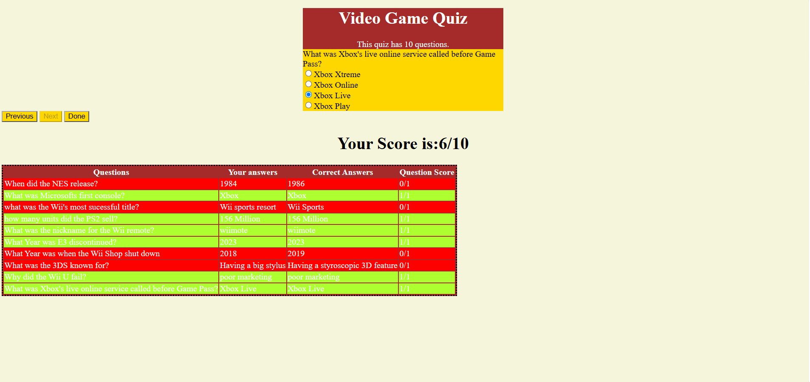
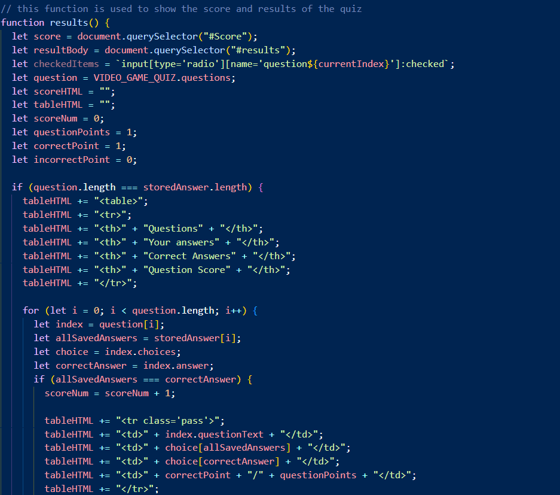
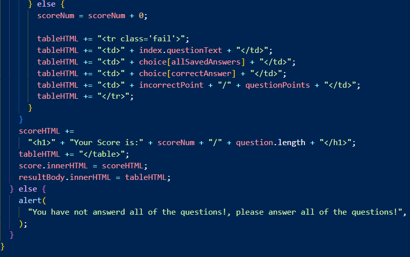
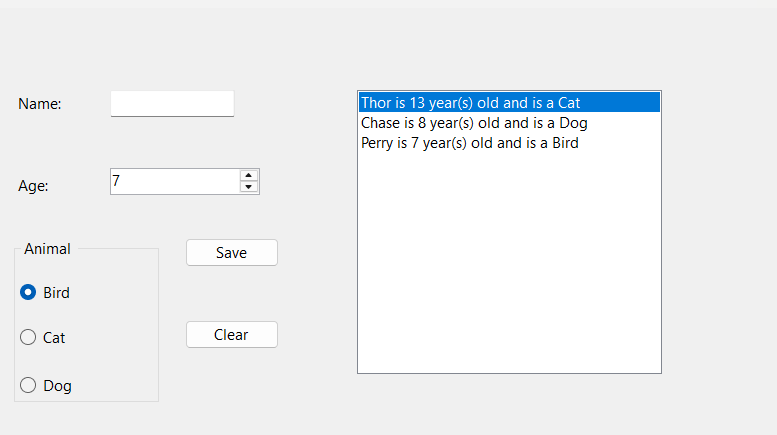
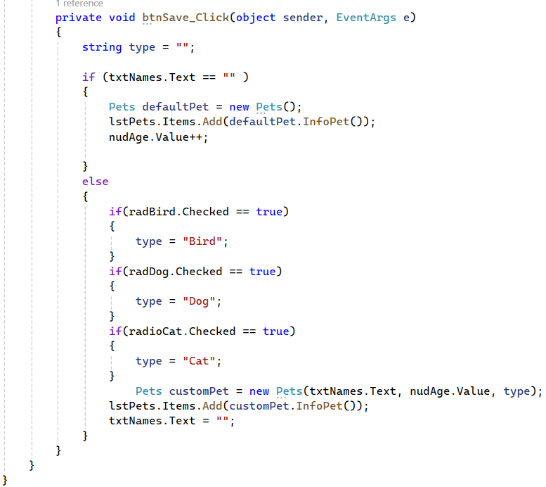
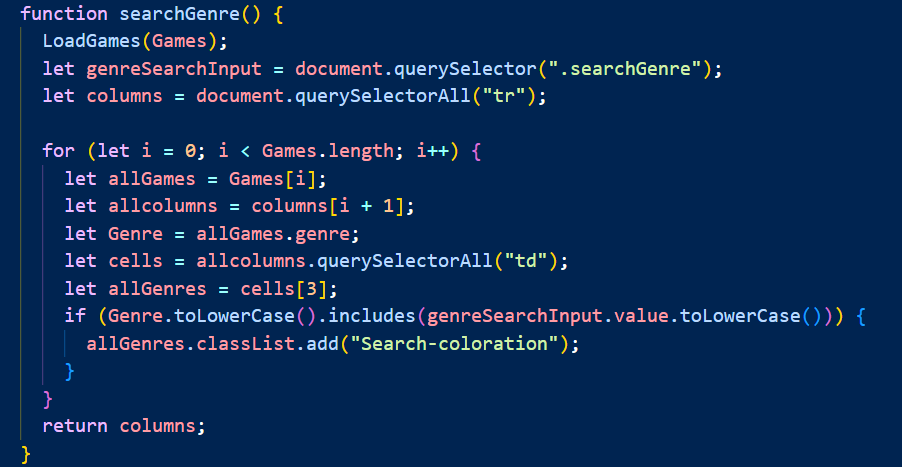

My Projects
The projects listed down below are the projects that I am the most proud of thus far. I was the sole programmer of all of these projects.
Quiz Application
This project is a webpage that loads a quiz based around video game history trivia. The Functionality of the Quiz is similar to your usual online quiz, but you cannot progress in the quiz unless you answer the next question and when you finish the quiz a chart appears underneath showing your answers, the correct answer, if you received a point from the question and it is highlighted red or green depending if you are right or wrong

The following block of code contains a function that is used to show the final result of the quiz. The start of the function declares all of the objects used to create the final table. The next thing the function does is if the amount of answers that you answer matches the amount on the question the quiz it creates the result table. Then after the initial are set up the function goes through every question on the quiz. Then it checks if your answers were correct and gives you a point if said question was correct. In one of the columns it shows the correct answer and in another it stores your answer. After the loop is finished it will count all your point and give you a result out of 10. If you did not answer all of the questions the website will alert you that you have finished the quiz.


For this project I used Visual Studio Code.
The repository for this project:Quiz App
Add Items Application
This project was made initially for practice with the basics of OOP such as creating properties, constructors, getter and setters, class methods and utilizing them in a WindowsFormAPP. The functionality of this app is naming an item, selecting a category that it is from and giving an item a property, in this case a pet's name. You can save the name to the groupBox and can reset the entire application via a button.

This is a C# method that is used to save the listed down properties of the newly added item e.g(Name, Age, etc). The method starts by declaring a string to store the result of the item type. Then the method sees if a name has been listed down for the new item. If the item does not contain a name the default item from the class will be added to the listbox, if the item has a name it will add the item you created to the list box

For this project I primarily used Visual Studio 2022 using a WindowsFormAPP.
The repository for this project: Add Items Application
JavaScript Item Organizer
The last project I am proud of is another website that is used to organize items. This project starts with a list of items that was made using an array of objects. There is a search block that contains various properties of an object, for example a video game's title or it's publisher. Then anything that is applicable with your search will be highlighted in red. You can also add brand new Items with the "add game" box that allows you to add your own items.
The following image shows the initial items in the app and some of the search bar and the image shows to be searching for any name that contains "Mario".

The following Image shows the rest of the search box and the add Item box for adding items

The final image displays the chart of all the items again but, with a newly added item at the bottom

The following image displays a block of code that is used to search for genres of the items. The function first reloads the table with the "LoadGames()". Then it makes variables for to connect the JavaScript file to the genre input class, then creates a variable that finds every table row in the html file. Then the function loops through every Item and then looks in the 4th(genre) table row and goes through every cell in that row and if any of the letters match in the genre table row it will highlight that cell red signifying that it found a match.

For this project I used Visual Studio Code.
The Repository for this project:Item Organizer